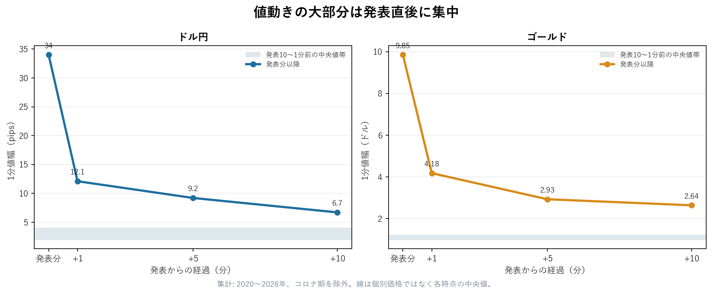
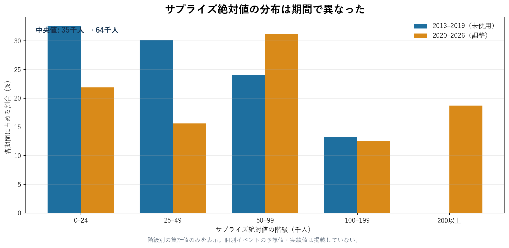

発表直後に集中し、その後は方向性が弱まった
本稿は、米雇用統計の発表前後について、値動きの時間分布、サプライズと初動の関係、対象間の相関、期間差として今回のデータから確認できた事実をまとめたものです。
1. 値動きは発表分に集中した
2020〜2026年のコロナ期を除く集計では、1分値幅の中央値は発表分にドル円34.0 pips、ゴールド9.85ドルでした。発表10〜1分前の各1分はドル円2〜4 pips、ゴールド1.0〜1.2ドルで、発表分は直前の8〜10倍でした。
| 時点 | ドル円 | ゴールド |
|---|---|---|
| 発表10〜1分前 | 2〜4 pips | 1.0〜1.2ドル |
| 発表分 | 34.0 pips | 9.85ドル |
| +1分 | 12.1 pips | 4.18ドル |
| +5分 | 9.2 pips | 2.93ドル |
| +10分 | 6.7 pips | 2.64ドル |

2. 発表分の後は方向性が弱まった
発表分の終値から初動と同じ向きに10分間を測った結果は、ドル円が中央値 +2.15 pips・勝率55%、ゴールドが中央値 +0.27ドル・勝率52%でした。ドル円で初動と逆向きに測ると中央値 −2.15 pips・勝率45%でした。
| 測定 | 中央値 | 勝率 |
|---|---|---|
| ドル円・初動と同じ向き | +2.15 pips | 55% |
| ドル円・初動と逆向き | −2.15 pips | 45% |
| ゴールド・初動と同じ向き | +0.27ドル | 52% |
今回の標本では、この段階から方向を判断する考え方を支持するほどの差は確認できませんでした。加えて、元の1分足はBidのみで、発表時のスプレッドを含んでいません。
3. サプライズの符号と初動方向には関係があった
雇用者数の実績が市場予想を上回ったか下回ったかという符号と初動方向の一致率は、全サプライズでドル円73%、ゴールド73%でした。絶対値が5万人以上のサプライズでは、それぞれ85%と82%でした。
| 対象 | 全サプライズ | 5万人以上 |
|---|---|---|
| ドル円（同方向の関係） | 73% | 85% |
| ゴールド（逆方向の関係） | 73% | 82% |
これは同時点の過去の関係を集計したものです。発表後の方向性が弱まったという前節の結果を置き換えるものではなく、将来の方向を示すものでもありません。
4. 二つの対象は独立した分散源ではなかった
同じイベント条件で算出したドル円とゴールドの結果は、相関 +0.50 でした。51回の共通観測のうち、結果の符号がそろった回は40回（78%）です。方向の反応が逆でも、同じ雇用統計サプライズへ反応するため、独立性は低いという結果でした。
5. サプライズ規模は期間で異なった
サプライズ絶対値の中央値は、2013〜2019年がドル円35千人・ゴールド34千人、2020〜2026年がドル円64千人・ゴールド62千人でした。この期間差は、固定した条件の結果が未使用期間で劣化した背景の一つです。

別の集計では、コロナ期を除く67回のサプライズ中央値は +33千人で、上振れ43回、下振れ24回でした。これは対象期間に観測された偏りであり、その後も続くという意味ではありません。
元の出所は、実績値がBLS Employment Situation、価格がHistData.com、市場予想が個人ブログおよびみんかぶFXです。このページには集計値だけを掲載し、価格列、予想値一覧、個別イベント系列は掲載していません。